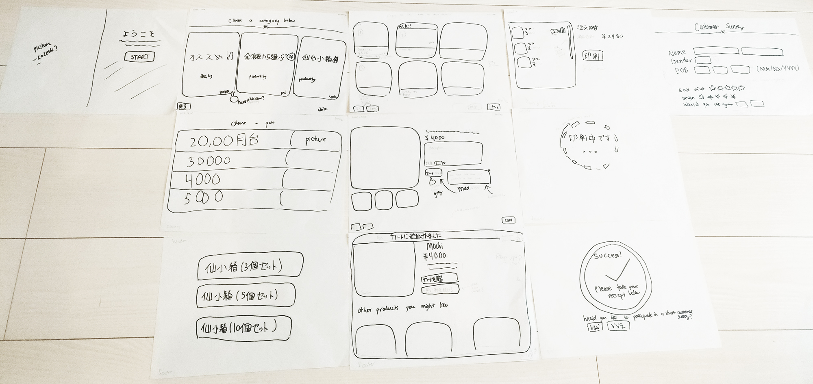

Challenge
Working in a team with the software engineer and project leaders, my job was to design wireframes and high fidelity prototypes. Important points I focused on were usability and a stylish design that catered to a target audience composed of all ages, but a large majority being older adults.
The concept image that I was given to by the engineer
Research
As a Sendai resident for approximately three and a half years, I have been to Fujisaki a handful of times. So, I began my creative research process
by jotting down notes and impressions that I had of Fujisaki.
I also looked for stock images of things that I knew Fujisaki sold such as kokeshi dolls, akabeko, skincare/bath sets, etc. I wanted to have a clean, simple look that had large images and text. It was important for the buttons to have text, and not solely icons to ensure that it was user-friendly to seniors as well. During this stage, I also viewed other Japanese websites to gain familiarity with Japanese UX/UI. I looked at apps such as Uniqlo, GU, Fujisaki’s homepage and Mercari, paying attention to their layout, fonts, and language.

Visual mood board.
Then, I created a persona to help me draft. Since I knew that the majority of the users would be older, I asked friends’ parents and older friends who shop at Fujisaki. I asked them what features they like/dislike on apps, as well as what they look for in a product when shopping for a gift. Some highlights included, them not knowing the hamburger menu, being less intuitive when it comes to buttons that are only icons without text, and a dislike for red text or small items.
‍
With this research under my belt, I sketched up some low-fi wireframes. I tacked on the idea of a customer survey at the end as well.

And with Figma, I quickly whipped up some wireframes injecting bits of color and images to give me an idea and inspiration for direction.

At this stage, the survey was an idea, and had not been approved yet so I didn't full actualize the layout yet.
Then, I designed some high-fidelity prototypes. The software engineer requested that I communicate the design for interactive elements such as hovers. So I decided to use Figma’s animation features and build an interactive prototype.
After completion, the project manager and software engineer gave me feedback on my design. They suggested that I decrease the size of items and change the font, and to cut out the Recommendations (オススメ) option. Based on their advice, I quickly whipped up the final product below:
|